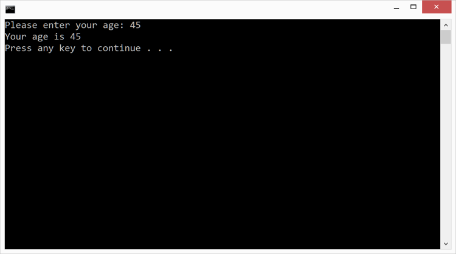

Duration
15 minutes
Lab goals
Here you will implement a program to read the user's age. The age will arrive in your program as a string so you will need to convert it to an integer. Once the age is in integer format, you can use it in mathematical expressions. You will then convert the integer back to a string and display it to the user. The high-level goals for the exercise are listed below:
- Read user input.
- Convert a string to an integer.
- Convert an integer to a string.
Below is the output from the finished application.
Required assets
The provided Exercise 1/Part1.Completed folder contains a completed version of the exercise you can use to check your work. Please make sure you have this folder before you begin.
Tip: If you are doing this exercise live in a session, make sure to make good use
of the instructor, they are online to answer any questions you have!
Steps
Below are the step-by-step instructions to implement the exercise.
Create a new Console application
- Start Visual Studio.
- Create a new Console Project using either the New Solution... link on the home screen or the File > New > Solution menu entry.
- Name the Project and Solution Parse. The word parse has several meanings in Computer Science. In this context, it is referring to the process of analyzing the input string and computing the corresponding integer value.
- Fill in the Location field with the name of the folder where you would like to store your work.
- Click OK.
Implement your program
- The file Program.cs should already be open in the text editor. If it is not, open it by double-clicking on the filename in the Solution view.
-
Please delete the
Console.WriteLineline that Visual Studio generated insideMain. -
All your code will be written inside the curly braces that delimit
Main. Position the cursor in the text-editor window on the line below the open-curly-brace forMain. -
Use
Console.Writeto print out a prompt to the user asking them to enter their age. UsingConsole.Writewill leave the cursor on the same line as the prompt which should be a more intuitive experience for the user. Note that there is nothing wrong with usingConsole.WriteLinehere instead, it is mainly personal preference about the way it looks to the user (if you have time, feel free to try usingConsole.WriteLineand see how it behaves). -
The Console window is text based so everything you read from it arrives as
a string. There is no way to say "read an integer from the Console" you can only say "read
a line from the Console and give it to me as a string". Use
Console.ReadLineto read the user's age. Store the returned value in astringvariable namedyourAge. -
Converting a string to an integer would be a tedious process if you had to do it manually.
For example, to convert the string
"457"to the integer457you would need to figure out which digit was in the ones place, which digit was in the tens place, etc. Then you would compute4 * 100 + 5 * 10 + 7. Luckily, the standard library does this for you (see below). In your program, use theParsemethod to convert the user's age from a string to an integer, then store the result in anintvariable namedyourAgeAsInt.string s = 457; int i = int.Parse(s);
-
[Optional] Now that you have the user's age as an integer, you can use it in mathematical
expressions. Include a line in your program that adds
1to theyourAgeAsIntvariable. This operation could not be performed on the string value so it is good motivation for why conversions from string to integer are needed. -
Now you need to convert the integer back to a string and print it to the console.
The code below shows how to do the conversion manually - this is the technique you
should use here.
int i = 3; string s = i.ToString();
Note that you may have already seen a shorter way to achieve this same goal by letting theWriteLinemethod automatically convert your data into strings (see below). Do not use this shorter technique here; please use the manual process (i.e. theToStringmethod shown above) to convert the integer into a string.int i = 3; Console.WriteLine("The value is {0}", i);Once you have the age as a string, useConsole.WriteLineto display it to the user. - Run your program by clicking on the Run > Start Without Debugging menu entry (recall that clicking on Start Without Debugging actual does three things: saves your work, builds your project, and runs your program). A Console window should appear on your screen and display the program output as shown below.